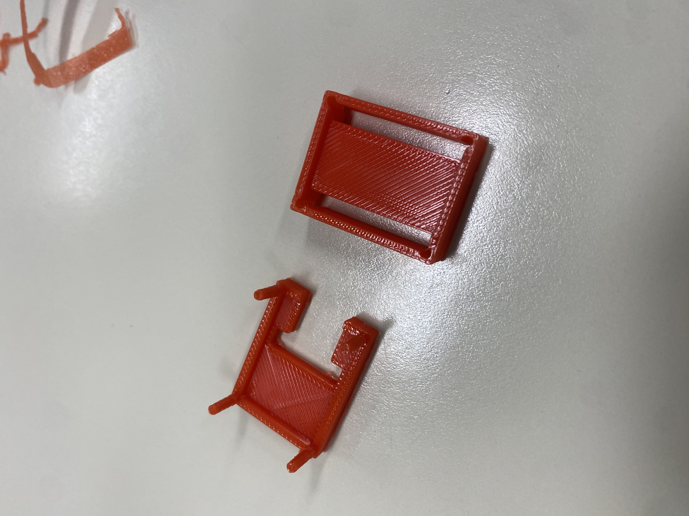
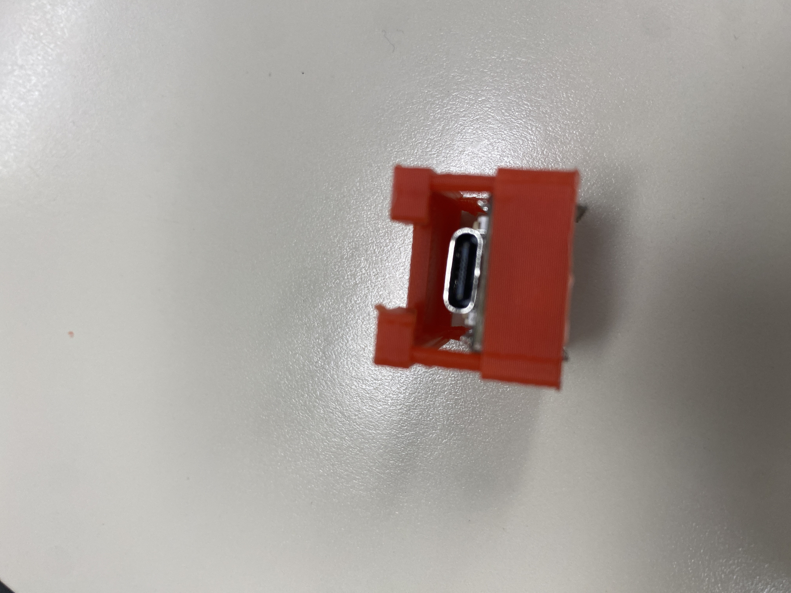
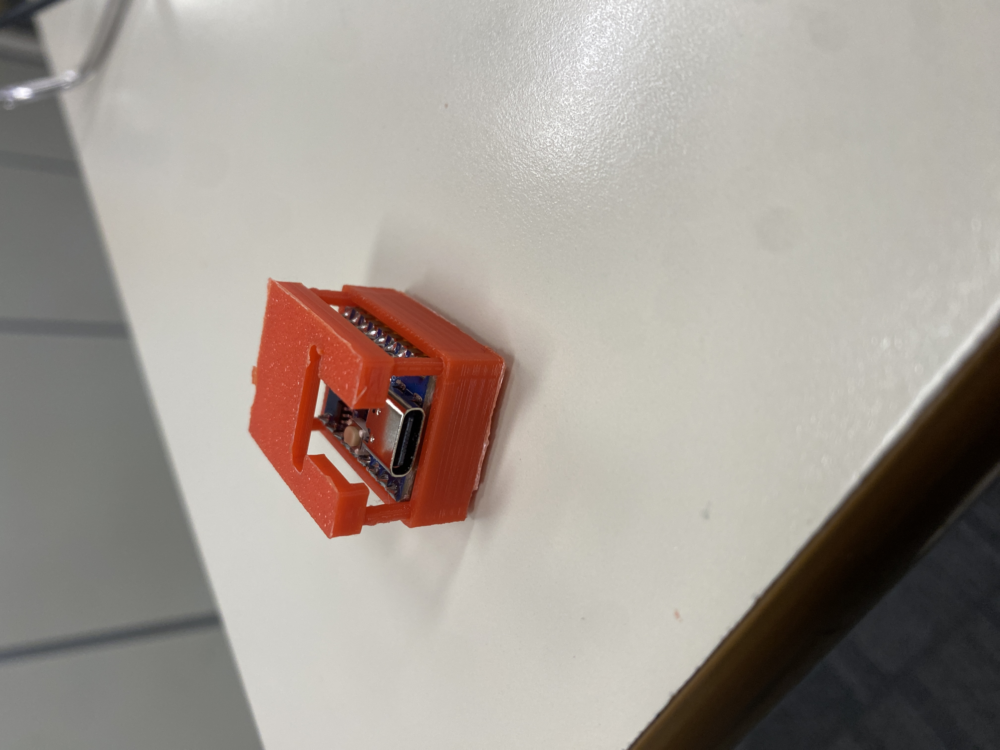
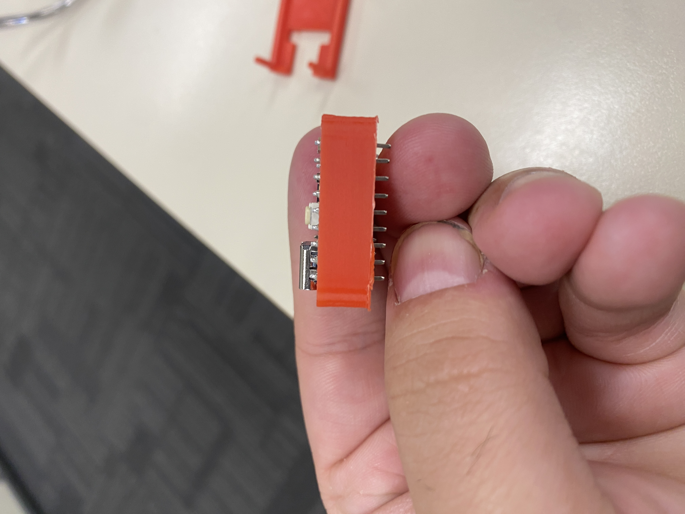

Second Iteration — 01 June 2026
Prototype 2
A significantly redesigned two-piece case introducing a leg-and-hole lid connection system. While print quality and orientation were corrected, new issues with the lid joining system and button hole placement were discovered.
Date01/06/2026
Print Time20m 01s
Material4.25g PLA
Cost$0.13
Result✗ Fail
Photos




Description
Prototype 2 was a full redesign addressing the major issues found in Prototype 1. The case was split into two parts: a base tray and a separate lid. A leg-and-hole joining system was introduced — the lid featured small legs designed to insert into corresponding holes in the base to hold the case closed. The print orientation was corrected, and overall dimensions were increased to better accommodate the board. However, the bottom half still had incorrect internal dimensions — the ESP32-C3 Zero was a tight and misaligned fit, and one side required sanding to insert the board. The leg-and-hole joining system failed because both the legs and holes were printed at the same size, preventing them from connecting. Button holes were also incorrectly positioned, stopping the chip from sitting flat and making the buttons inaccessible. After reviewing a classmate's design, a decision was made to completely rethink the lid system for Prototype 3.
Changes from Prototype 1
→ What was changed and why
- Switched to a two-part design (base + lid) to allow the board to be enclosed
- Corrected print orientation — walls are now structurally sound
- Increased internal dimensions to try to fit the board
- Added leg-and-hole joining system to connect the two halves
- Added button hole openings (positions were incorrect however)
- Walls thickened to prevent snapping seen in Prototype 1
Pros & Cons
✓ Pros
- Two-piece design is a major step forward from Prototype 1
- Correct print orientation — no structural snapping
- USB-C port is now clearly accessible from the front
- Walls are thicker and more durable
- Button hole openings were included (even if wrongly placed)
✗ Cons / Problems
- Bottom half internal dimensions still incorrect — board required sanding to fit
- Lid leg-and-hole system failed — legs and holes same size, won't connect
- Button holes incorrectly positioned — chip couldn't sit properly
- Board sits misaligned inside the base
- Still no ventilation holes added
- Lid system requires a complete rethink
Planned Improvements for Prototype 3
→ Changes to implement
- Completely redesign the lid closure — move to a thin clip-based system reviewed from a classmate's design
- Adjust internal dimensions for a correct board fit with no sanding required
- Reposition button cutouts to align correctly with the BOOT and RST buttons
- Add ventilation slots to the sides of the case for airflow
- Complete a full design brainstorm before starting Prototype 3 CAD work